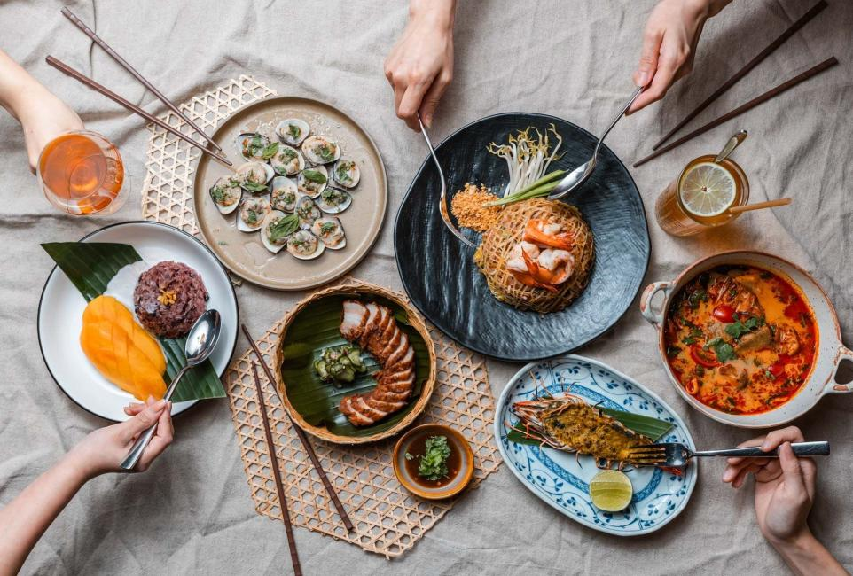
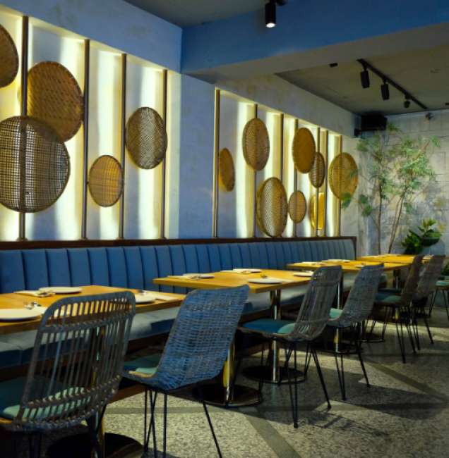
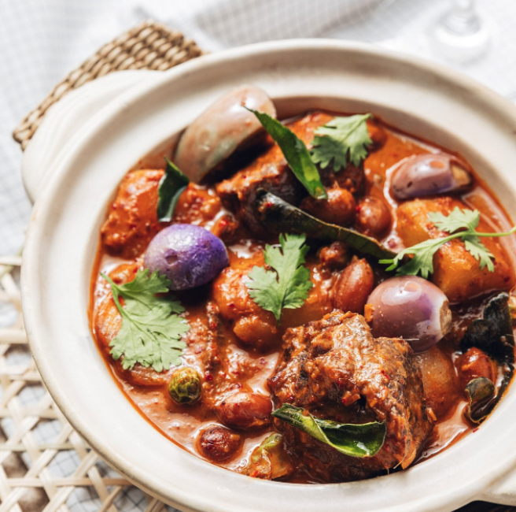

|  |
【baan Taipei】營業時間:11:30 - 14:30 / 17:30 - 22:30 |
| 【地址】台北市大安區敦化南路一段233巷15號
捷運忠孝敦化站，步行 2 分鐘的距離 |
 |
|  |
・baan 在泰文是「家」的意思。
・baan Taipei 是由林泉主廚與泰國星廚 Chef Ton 共同打造的餐廳。 ・堅持使用新鮮香料、純手工製作，結合台灣在地食材呈現泰國家常風味。 |